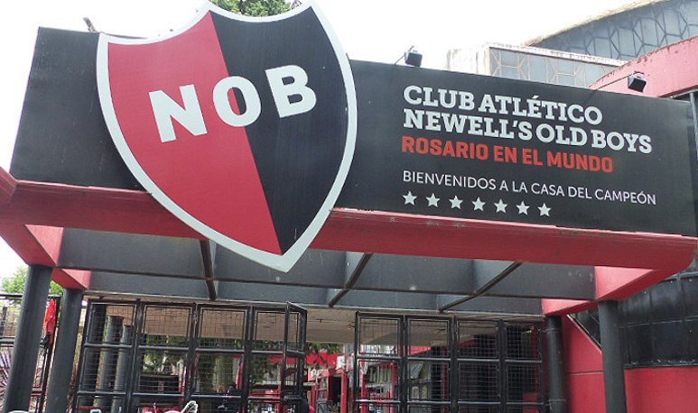

Sitio No Oficial del Club Atletico Newell´s Old Boys
Club deportivo de la ciudad de Rosario, Provincia de Santa Fe, Argentina. Lleva 61 temporadas ininterrumpidas de Primera División, posicionándose tercero en dicho rubro. Posee los honores de haber sido el primer club de fútbol del interior en conseguir un título oficial de la AFA; el único campeón con futbolistas y cuerpo técnico íntegramente formados en la institución, en el campeonato de Primera División 1987-88; y de ser el único club que integró un seleccionado nacional completo, en el Torneo preolímpico de 1976. Además, es el octavo equipo que más puntos suma en la Clasificación histórica de la Primera División durante el profesionalismo. A su vez, es uno de los ocho equipos argentinos en ganar más de un millar de partidos en Primera División.